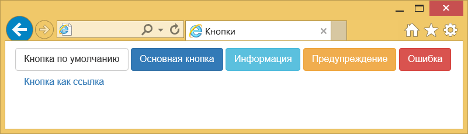

Кнопки
Кнопки применяются не только как элементы форм, в кнопку вполне можно превратить и ссылку, придав ей прямоугольный вид. Она по прежнему останется ссылкой со всем доступным функционалом, но по своему оформлению будет напоминать ту же кнопку. Аналогично и обратное — кнопке допустимо придать вид ссылки.
Для создания кнопок добавьте к элементу <a>, <input> или <button> класс btn. Второй класс нужен для изменения стиля кнопки. В примере 1 показаны возможные варианты кнопок и для каких целей и предназначены.
Пример 1. Кнопки
<button type="button" class="btn btn-default">Кнопка по умолчанию</button>
<button type="button" class="btn btn-primary">Основная кнопка</button>
<button type="button" class="btn btn-info">Информация</button>
<button type="button" class="btn btn-warning">Предупреждение</button>
<button type="button" class="btn btn-danger">Ошибка</button>
<button type="button" class="btn btn-link">Кнопка как ссылка</button>Результат данного примера показан на рис. 1.

Рис. 1. Разные кнопки
При наведении курсора на кнопку она становится чуть темнее.
Размеры кнопок
Если вам требуется сделать кнопку больше или меньше, то для этого применяется три дополнительных класса. Класс btn-lg устанавливает кнопку большого размера, btn-sm — маленького, а btn-xs — очень маленького (пример 2).
Пример 2. Кнопки разного размера
<button type="button" class="btn btn-primary btn-lg">Большая кнопка</button>
<button type="button" class="btn btn-primary">Размер по умолчанию</button>
<button type="button" class="btn btn-primary btn-sm">Маленькая кнопка</button>
<button type="button" class="btn btn-primary btn-xs">Очень маленькая</button>Результат данного примера показан на рис. 2.
Рис. 2. Кнопки разного размера
Кнопку можно сделать и блочной, занимающей всю доступную ей ширину. Добавьте к ней только класс btn-block, в результате получится следующая кнопка (рис. 3).
Рис. 3. Блочная кнопка
Код для создания таких кнопок показан в примере 3.
Пример 3. Блочные кнопки
<button type="button" class="btn btn-primary btn-block">Кнопка шириной 100%</button>
<button type="button" class="btn btn-block">Ещё одна такая кнопка</button>Блокирование кнопок
Чтобы кнопка перестала работать, для элементов <input> и <button> достаточно добавить атрибут disabled. Bootstrap сам изменить стиль таких кнопок, показав наглядно, что нажимать на них бесполезно. Для ссылок, оформленных как кнопки, нужно включить класс disabled, как показано в примере 4.
Пример 4. Блокированные кнопки
<button type="button" class="btn btn-default">Обычная кнопка</button>
<button type="button" class="btn btn-primary" disabled>Ты не нажмёшь!</button>
<input type="submit" class="btn btn-default" disabled value="Блокированная кнопка">
<a href="link1.html" class="btn btn-default disabled">Блокированная ссылка</a>Результат данного примера показан на рис. 4.
Рис. 4. Вид обычных и неактивных кнопок

Все материалы сайта доступны по лицензии Creative Commons «Attribution-NonCommercial» («Атрибуция — Некоммерческое использование») 4.0 Всемирная, если не указано иное.